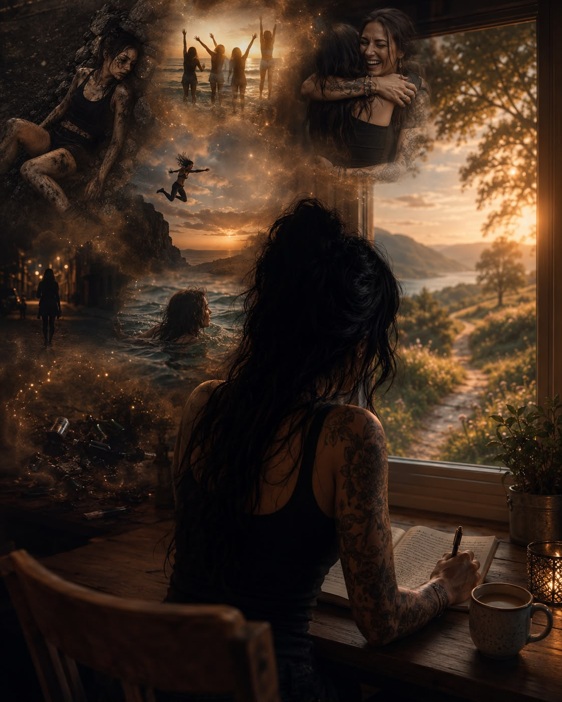

Det er mye jeg kunne fortalt deg..
Det er mye jeg kunne fortalt deg.
Jeg kunne fortalt deg om den gangen jeg var på fjelltur og falt ned en steinrøys i fylla.
Jeg kunne fortalt deg om da jeg haika midt på natta i et ukjent land med altfor høy promille.
Jeg kunne fortalt deg om da jeg hoppa fra en altfor høy klippe en sommernatt, uten at tanken på de skarpe steinene under meg slo meg.
Jeg kunne fortalt deg om da jeg var både full og stein og svømte langt ut i Middelhavet, før jeg nesten ikke hadde krefter til å svømme inn igjen.
Jeg kunne fortalt deg om alle de grenseløse og farlige situasjonene jeg satte meg selv i.
Jeg kunne fortalt deg om angsten etterpå.
Om da jeg løy til legen med knekt nese, blåveis og kraftig hjernerystelse, og sa at jeg hadde snublet. Ikke at jeg hadde falt ned trappa i mitt eget hus fordi jeg bare skulle drikke litt til.
Jeg kunne fortalt deg om løgnene jeg fortalte meg selv.
At det ikke var så ille.
At det kunne vært verre.
Jeg kunne fortalt deg at jeg fortalte historien om den snublinga så mange ganger at den til slutt føltes sann.
Den var lettere å bære enn sannheten.
At jeg hadde mistet kontrollen.
Jeg kunne fortalt deg om alt jeg pyntet på for å klare å leve med meg selv.
Jeg kunne fortalt deg hvor heldig jeg har vært.
For jeg kunne like gjerne vært henne,
venninna mi som drakk like hyppig og farlig som jeg gjorde.
Hun sovnet i en vinduskarm.
Hun falt fire etasjer.
Hun våknet aldri igjen.
Jeg husker fortsatt latteren hennes, selv om det er over tjue år siden den stilnet.
Jeg kunne fortalt deg om vennen min som ikke orket mer.
Som tok sitt eget liv etter altfor mye alkohol.
Jeg kunne fortalt deg om netter jeg fortsatt ligger våken fordi vi kranglet den siste kvelden.
At den kvelden aldri kan gjøres om.
Jeg kunne fortalt deg om alt jeg ikke ville kjenne på.
Alt jeg ikke turte å møte uten promille.
Men jeg vil heller fortelle deg om det som skjedde etterpå.
Etter at jeg sluttet.
Etter at helvetesuka var over.
Da dagene begynte å komme, én etter én.
Da jeg forsto at alt jeg hadde prøvd å dempe, egentlig var meg selv.
Mitt eget liv.
Og at den jobben jeg gjør hver eneste dag, faktisk er verdt det.
Jeg vil heller fortelle deg at noe av det jeg en dag skulle bli aller mest takknemlig for, var helt vanlige dager.
Dager der ingenting var galt.
Der ingen krise måtte løses.
Der jeg bare kunne puste.
Å legge meg uten skam.
Å våkne uten angst.
Å drikke kaffe en stille morgen.
Å skrive.
Å le.
Det høres kanskje ordinært ut.
Men for meg føles det ekstraordinært.
Jeg vil heller fortelle deg om identitetskrisen.
For da alkoholen forsvant, forsvant også en del av identiteten min.
Ikke fordi alkoholen var den jeg var.
Men fordi den hadde vært en del av livet mitt så lenge.
Plutselig satt jeg igjen med et spørsmål.
Hvem er jeg uten den?
Det spørsmålet var ubehagelig.
For jeg kunne ikke lenger gjemme meg bak et glass vin. Jeg kunne ikke lenger gjemme meg bak et «sånn er jeg bare».
Jeg måtte bli kjent med meg selv på nytt.
Og det er kanskje noe av det viktigste jeg noen gang har gjort.
Jeg vil heller fortelle deg at før kunne jeg dempe følelsene mine.
Nå må jeg kjenne dem.
Tristheten får være tristhet til den går over.
Men det gjelder også gleden.
Den kjennes sterkere enn jeg kan huske.
En stund føltes alt litt rart.
Som om følelsene mine hadde glemt hvordan de skulle fungere.
Nå vet jeg at det ikke var noe galt med meg.
Jeg var bare på vei tilbake.
Jeg vil heller fortelle deg at noen vennskap ikke ender med en krangel.
De glir bare stille bort.
Invitasjonene blir færre.
Eller kanskje var det jeg som sluttet å si ja.
Jeg oppdaget at noen relasjoner ble holdt sammen av det som var i glasset.
Det gjorde vondt.
Men det ga også plass til noe nytt.
Jeg vil heller fortelle deg om sorgen.
Ikke sorgen over alkoholen.
Men sorgen over alle årene jeg ga bort.
Jeg sørger over den jeg var da jeg trengte alkoholen.
Over morgenene jeg mistet.
Over alle stundene jeg var til stede, uten egentlig å være der.
Den sorgen kommer fortsatt av og til.
Nå skyver jeg den ikke bort.
Jeg lar den få være der.
For sorg betyr ikke at jeg vil tilbake.
Den betyr at jeg endelig ser det jeg har mistet.
Og hvor mye jeg fortsatt har igjen å leve.
Og jeg vil heller fortelle deg om håpet.
For håpet kommer sjelden som et fyrverkeri.
Det kommer stille.
En morgen oppdager du at du har sovet litt bedre.
En dag ler du litt høyere enn før.
Du merker at du gleder deg til noe.
At du begynner å stole litt mer på deg selv.
At livet ikke lenger bare handler om å overleve.
Men om å leve.
Og til slutt vil jeg heller fortelle deg dette.
Jeg mistet ikke meg selv da jeg sluttet å drikke.
Det var da jeg sluttet å drikke at jeg sakte fant veien tilbake til den jeg alltid hadde vært.
Jeg vil fortelle deg at når jeg tenker på den krangelen vi hadde den siste kvelden han levde, så er det ikke den kvelden jeg velger å huske.
Vennskapet vårt var så mye mer enn en fyllekrangel.
Det skylder jeg både ham og meg selv å huske.
Og når jeg tenker på venninna mi nå, drukner jeg ikke lenger minnene om henne.
Jeg lar dem få være der.
Jeg husker latteren hennes.
Og når jeg ler i dag, så ler jeg edru.
Da føles det nesten som om litt av latteren hennes lever videre gjennom min.
❤️
